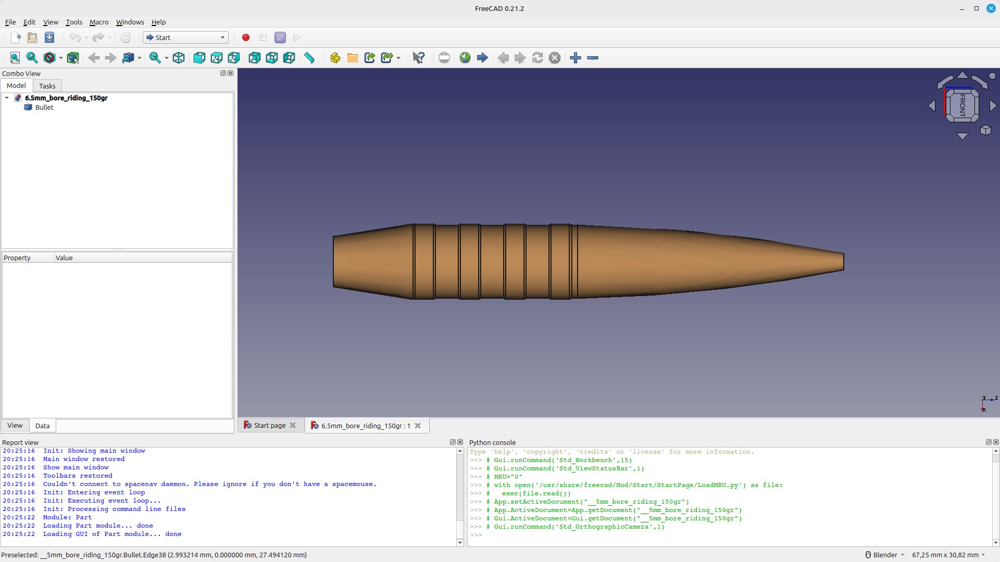

Symbol des Arbeitsbereichs BulletDesigner
Einführung Der Arbeitsbereich BulletDesigner ist ein externer Arbeitsbereich für FreeCAD das parametrische Geschoss- und Projektil-Entwürfe mit integrierten ballistischen Berechnungen, Materialdatenbank und Exportfunktionen bietet.

Funktionen
Kugelentwurf Vollständig parametrische Geschossgeometrie mit Live-Vorschau.
Mehrere Geschosstypen: Land-Riding, Flat-Base, Boat-Tail, Hollow-Point.
Ogive-Profile: Tangential, Sekant, elliptisch mit konfigurierbaren Kaliberverhältnissen.
Konfigurierbare Treibringe (Anzahl, Abstand, Länge).
Ballistische Berechnungen Stabilitätsfaktor (Miller-Formel mit Geschwindigkeitskorrektur).
Ballistischer Koeffizient (G1, geschätzter G7).
Querschnittsdichte.
Empfohlene Drallrate (Greenhill-Formel).
Flugbahnsimulation mit Transsonikzonenerkennung.
Spin-Drift-Schätzung (empirische Litz-Formel).
Andere Integrierte Materialdatenbank (Kupfer, Messing, Neusilber, Blei, Wolfram, Stahl).
Export nach STEP und STL für die Fertigung oder den 3D-Druck. Installation Den FreeCAD Addon-Manager nutzen:
FreeCAD öffnen.
Zu Werkzeuge → Addon Manager gehen.
Nach BulletDesigner suchen.
Installieren drücken und FreeCAD neu starten.
Manual installation: clone or download the repository and copy the BulletDesigner folder to your FreeCAD Mod directory:
Linux : ~/.FreeCAD/Mod/ .Windows : C:\Users\<username>\AppData\Roaming\FreeCAD\Mod\ .macOS : ~/Library/Preferences/FreeCAD/Mod/ .
Anwendung
Ene Kugel erstellen
Switch to the BulletDesigner workbench.
Click Create Bullet or use Bullet Designer → Create → Create Bullet .
Adjust parameters in the tabbed task panel:
Basic : diameter, length, weight.Ogive : type, caliber ratio, meplat diameter.Bands : number, length, spacing.Base : flat or boat tail configuration.Material : material selection and density.
Enable Live Preview to see real-time updates.
Click OK to generate the bullet.
Ballistischer Rechner
Select a bullet object (optional — auto-fills parameters).
Click Ballistic Calculator .
Enter twist rate, muzzle velocity, and atmospheric conditions.
Click Calculate .
Results include stability factor (Sg), BC, sectional density, and recommended twist rate.
Driving bands must fit within the body length (total length minus ogive and boat tail length), or the solid will not be generated.
Ballistische Formeln
Stabilitätsfaktor (Miller) S g = 3 0 × m t 2 × d 3 × l × ( 1 + l 2 ) × ( V 2 8 0 0 ) 1 / 3 Schwellenwerte:
Monolithisches Kupfer/Messing: Sg ≥ 1,8.
Bleikern: Sg ≥ 1,5.
Ballistischer Koeffizient (G1) B C = S D i
Where SD = sectional density and i = form factor (tangent: 0.85, secant: 0.80, elliptical: 0.75).
Sektionsdichte S D = W l b s d i n 2
Voraussetzungen FreeCAD 0.21 oder später.
Python 3.8 oder später.
PySide2 (in FreeCAD enthalten).
Verweise
Lizenz MIT-Lizenz.
{kind=link}
{kind=link}